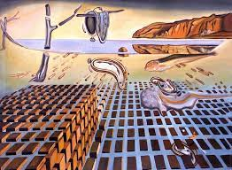
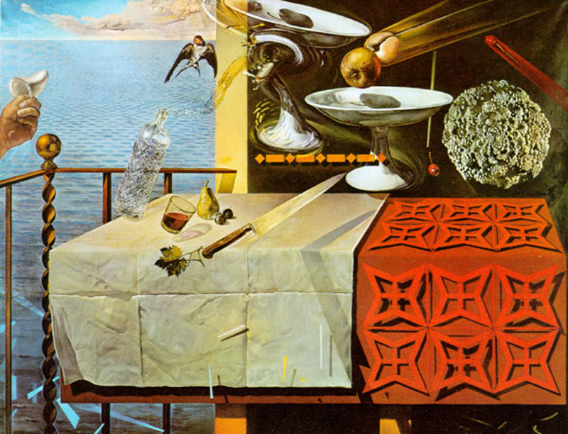
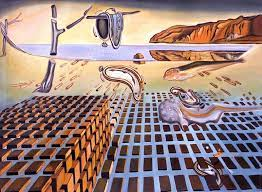
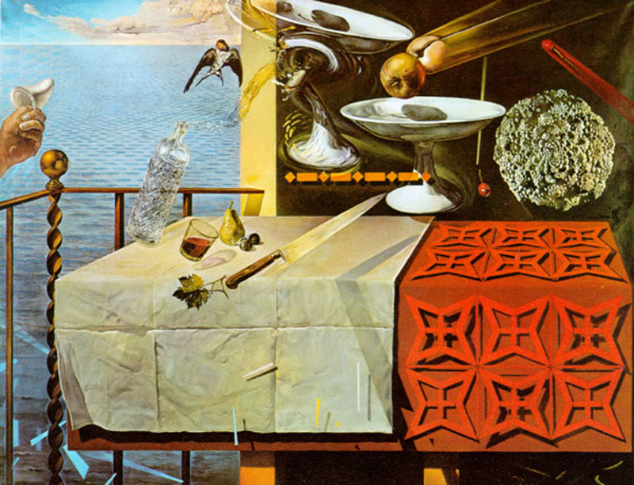

salvador dalì
L’adesione al movimento surrealista significa per Salvador Dalì riconoscimento internazionale, partecipazione alle esposizioni collettive del gruppo, pubblicazioni sulle numerose riviste che supportano il gruppo. Significa poi l’incontro con Gala, l’amore della sua vita, musa ispiratrice e protagonista di moltissimi dei suoi quadri, che al momento del loro primo incontro è la moglie di Paul Eluard. Il 1930: l'anno della svoltaAnno della vera svolta è il 1930. La coppia ormai inseparabile acquista una piccola casa a Port Lligat, è il nido, il rifugio, il castello incantato che sarà man mano ingrandito negli anni e dove entrambi resteranno fino alla fine. Nello stesso anno Salvador Dalì teorizza il suo nuovo metodo paranoico-critico che consiste nella ripetizione ossessiva di elementi che alludono alla parte più profonda dell’inconscio, quella dei conflitti familiari, delle pulsioni sessuali, dell’amore e della morte. Il processo paranoico prevede l’osservazione di un oggetto e la sua trasmutazione in un altro e si opera in uno stato allucinatorio, frenetico, compulsivo, diverso quindi dallo stato di quiete ipnotica descritto da Breton nell’automatismo psichico.
 


